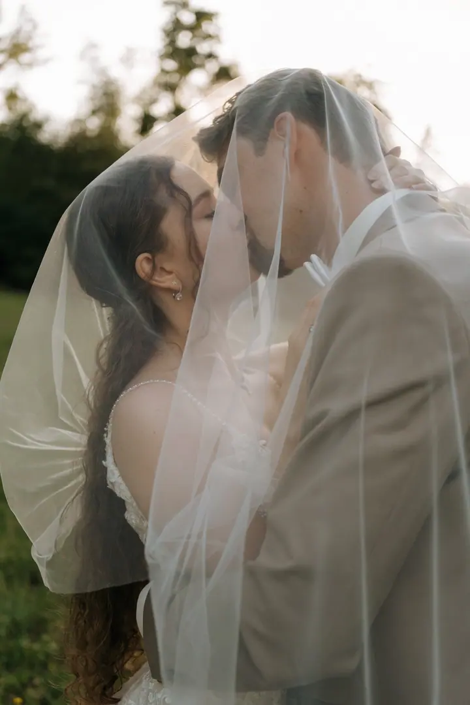
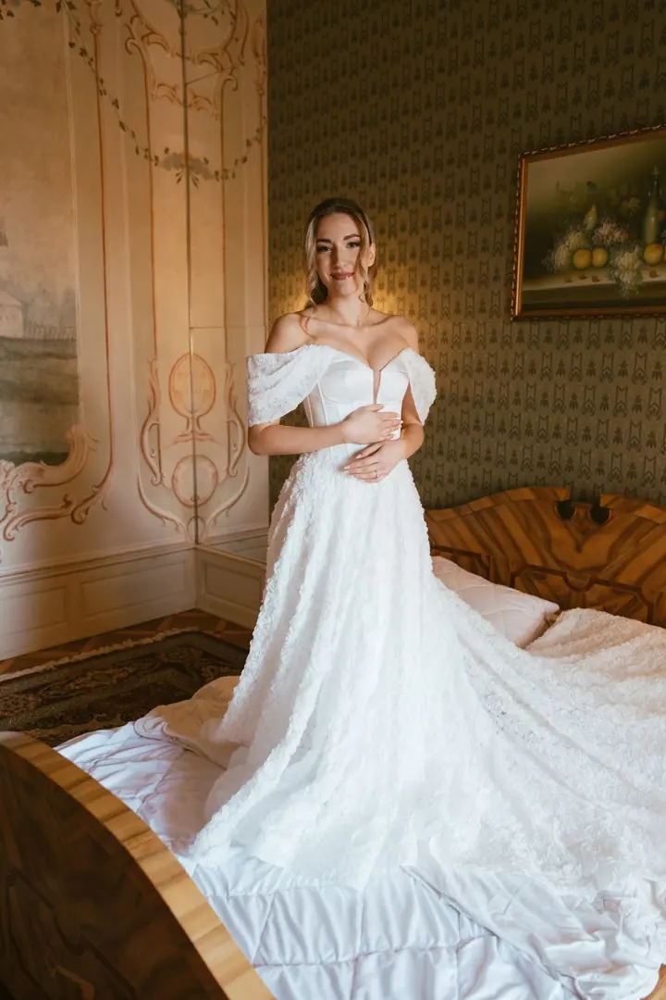
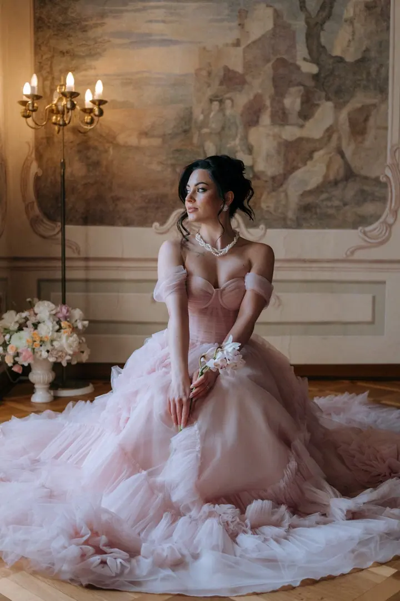
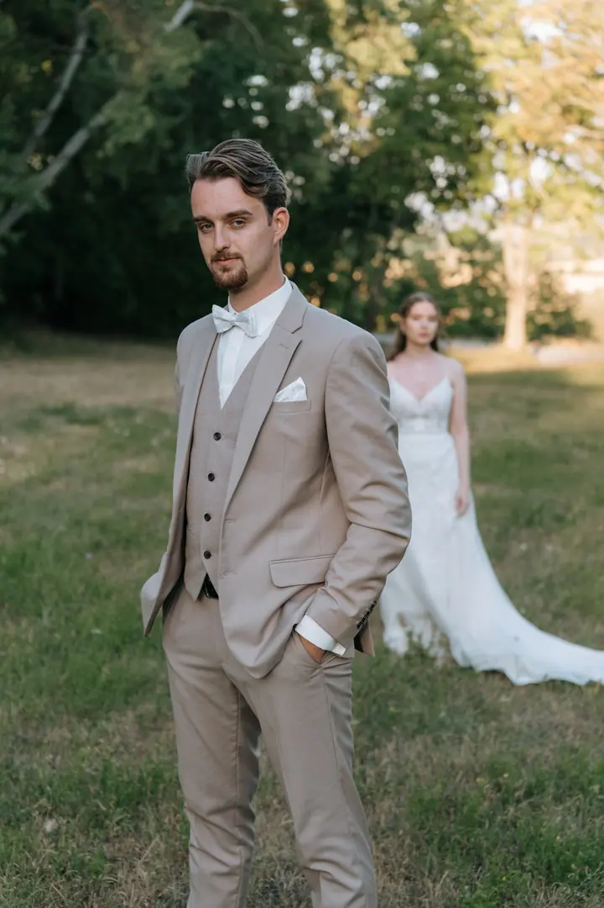
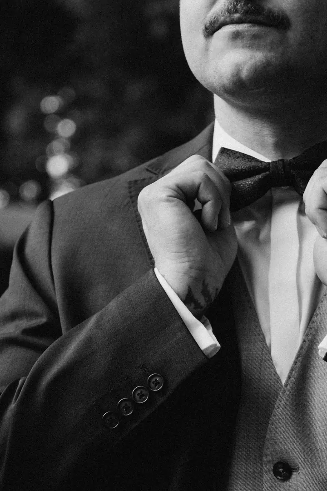
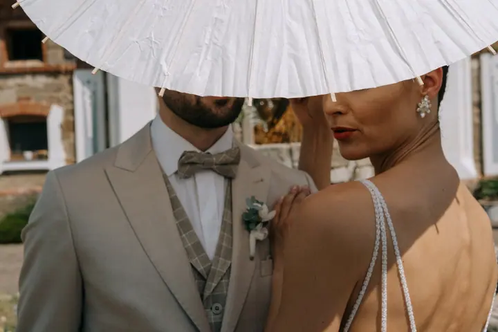

Svatební focení
Váš den vyprávím jemně, přirozeně a s citem, od příprav nevěsty až po večerní párové focení. Hodně mluvím a směji se s vámi, takže na objektiv rychle zapomenete.





Jmenuji se Vendula Koloušková a fotím pod jménem Gwendoleena. Specializuji se na svatební a rodinnou fotografii v okolí Písku, Českých Budějovic a ve svém ateliéru ve Vodňanech. Za svatbami jezdím po celé republice.
Více o mně
„Je to kouzlo, které promění chvíli v nesmrtelnou vzpomínku.“
— Vendula Koloušková
Váš den vyprávím jemně, přirozeně a s citem, od příprav nevěsty až po večerní párové focení. Hodně mluvím a směji se s vámi, takže na objektiv rychle zapomenete.
Ve městě, v přírodě nebo na místě, které pro vás má význam. Předsvatební focení vám pomůže zbavit se nervozity před samotným svatebním dnem.
Rodinné focení u vás doma nebo venku, ideálně při zlaté hodince. Newborn u vás doma fotím nejraději v dopoledním světle.
Focení v ateliéru, které není časově omezené. Mám tu spoustu krásného oblečení a šaty pro dámy i holčičky si můžete zapůjčit.
Jsem nadšená majitelka fotoaparátu a focení je pro mě způsob, jak zachytit přirozené emoce, lásku a kouzlo chvíle s jemností a citem. Chci vytvářet autentické snímky, které vyprávějí váš vlastní příběh.
Můj styl je jemný, přirozený a nadčasový. Žádné umělé rekvizity ani strojené pózy, jen vy takoví, jací skutečně jste. Hodně mluvím, směji se s vámi a vytvářím uvolněnou atmosféru, díky které zapomenete, že vás fotím.
Od jara do podzimu se snažím fotit kolem zlaté hodinky a nejoblíbenější místa mám v okolí Vodňan. Ráda za vámi ale dojedu do Strakonic, Prachatic, Písku, Českých Budějovic nebo do Prahy.
Ráda uslyším o vaší svatbě: termín, místo konání a něco o vás.
Na e-mail vám pošlu brožurku se všemi informacemi včetně cenových balíčků.
Osobně u kávy nebo přes videohovor. Poznáme se, probereme detaily svatby a vaše možnosti.
Na svatbě, před svatbou i po ní. O zbytek se postarám já, vy si den hlavně užijte.
Celý den (10 hodin focení, 400+ upravených fotografií, 50 tištěných fotek a předsvatební focení) stojí 30 000 Kč, půlden (6 hodin, 200+ fotografií) 19 000 Kč. Ceny platí od 1. 6. 2026.
Digitální fotografie dostanete do 14 dnů od výběru u balíčku 01, nebo do 14 dnů od focení u balíčku 02. Tištěné fotografie bývají hotové do 6 týdnů od výběru.
Ne. Kupujete si můj pohled na svět včetně barev, ořezů i úprav. Neupravené fotografie jsou jen polotovar bez části duše.
Ano. Napište mi, jestli chcete poukaz v elektronické nebo tištěné podobě, a já vám ho ráda pošlu.